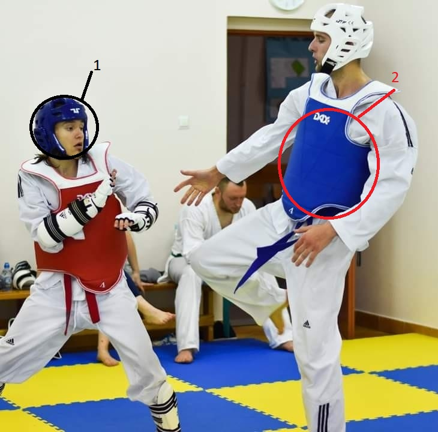

Zasady Kyorugi czyli walki nie są skomplikowane, łatwo je zrozumieć, chociaż niektóre aspekty nie są aż tak oczywiste, jak mogłoby się wydawać.
Miejsce zaznaczone 1 to kask, nie można w niego uderzać ręką, jednak techniki wykonywane nogą są dozwolone. Za Kopnięcie w głowę otrzyma się 3 punkty, a za trudniejsze kopnięcie obrotowe 4.
Natomiast w kamizelkę oznaczoną 2 możemy uderzać ręką (ale jedynie proste uderzenia), jednak nie jest to punktowane zawsze, przeciwnik musi się zawachać, zachwiać, zgiąć lub cofnąć do tyłu, wtedy otrzymujemy 1 punkt.
Za Kopnięcie na ochraniacz tułowia otrzymamy 2 punkty, za kopnięcie obrotowe będą to już 3 punkty.
